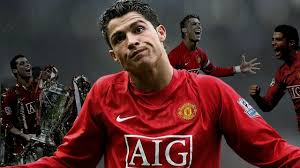
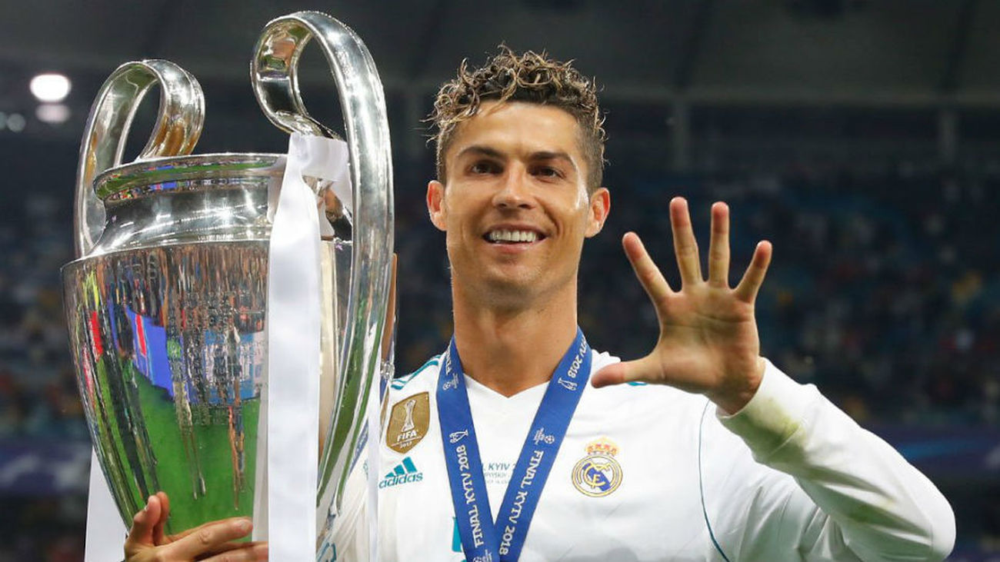

CRISTIANO RONALDO

-
LINKS
- MODULO II
- MODULO III
- MODULO IV



Cristiano Ronaldo, conocido popularmente como CR7, es uno de los futbolistas más destacados y exitosos de la historia del fútbol. Nació el 5 de febrero de 1985 en Funchal, Madeira, Portugal. Reconocido por su increíble capacidad atlética, su habilidad técnica, su potente disparo y su excelente juego aéreo, ha dejado una huella imborrable en el mundo del deporte. A lo largo de su carrera, ha jugado en varios de los clubes más importantes del mundo, como el Sporting de Lisboa, el Manchester United, el Real Madrid, la Juventus y, más recientemente, en el Al Nassr de Arabia Saudita. Ha ganado múltiples títulos de liga, copas nacionales, Champions League y ha sido galardonado con el Balón de Oro en varias ocasiones. Ronaldo es conocido por su ética de trabajo, disciplina y dedicación al fútbol. Además de ser un gran goleador, es un líder en el campo y ha sido un referente tanto para sus compañeros como para sus seguidores. Su imparable ambición y su pasión por mejorar constantemente lo han llevado a superar límites y mantenerse a la vanguardia a lo largo de los años. Fuera del campo, Cristiano Ronaldo también es un exitoso empresario y posee una marca personal muy reconocida, especialmente a través de su línea de ropa, CR7. Su influencia y presencia global lo han convertido en un ícono no solo del fútbol, sino también de la cultura popular.